30/12/2023 — Bệnh nhân 50 tuổi đau ngực, “không có thay đổi thiếu máu cục bộ”
Bản dịch tiếng Việt của bài "50-year old with chest pain, “no ischemic changes”" – Dr. Smith’s ECG Blog. Giữ nguyên toàn bộ 12 hình ảnh của bản gốc.
Tác giả: Jesse McLaren
Một bệnh nhân 50 tuổi trước đây khỏe mạnh đến khám
vì đau ngực khi gắng sức từng cơn trong 24 giờ, lan ra hai tay và
kèm khó thở. Cơn đau vẫn đang tiếp diễn khi bệnh nhân đến khoa
cấp cứu. Dưới đây là điện tâm đồ cũ (ở trên) và điện tâm đồ mới (ở dưới). Bạn
nghĩ gì?

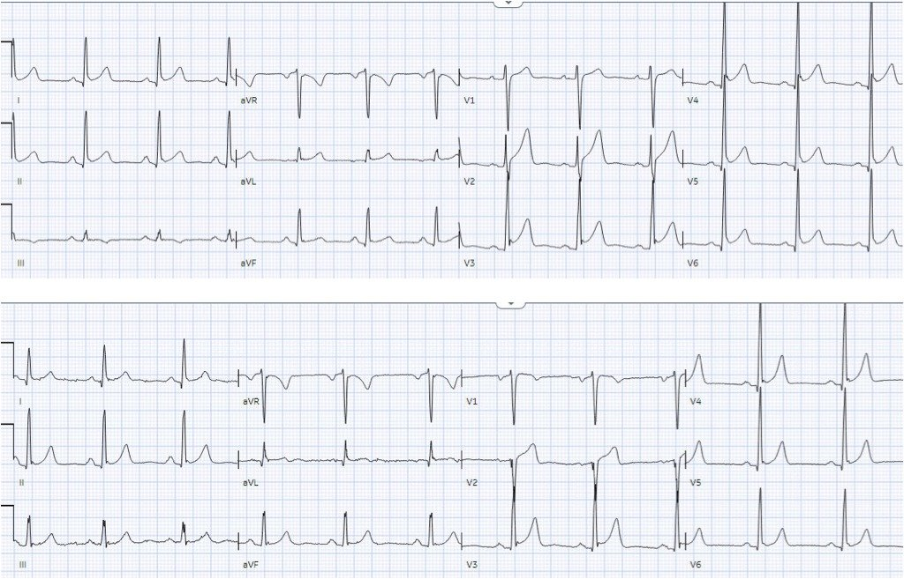
Nhịp xoang bình thường, dẫn truyền
bình thường, trục bình thường, và điện thế cao ở các chuyển đạo trước tim kèm sóng J do tái cực
sớm. Điện tâm đồ cũ có ST chênh lên và sóng T tương xứng. Nhưng điện tâm đồ
mới có sóng Q mới ở aVL và V2 (vùng phân bố của động mạch nhánh chéo
thứ nhất) – và trong bối cảnh có sóng Q mới, sóng T ở V2 dương và
tương đối lớn. Ở một bệnh nhân trước đây khỏe mạnh, có cơn đau
ngực mới xuất hiện và đang tiếp diễn, điều này đáng lo ngại cho tắc cấp động mạch nhánh chéo thứ nhất.
Smith: ST chênh lên bình thường ở V2-V4 không bao giờ đi kèm sóng Q! Vì vậy, không thể coi ST chênh lên (STE) này là bình thường, dù trên điện tâm đồ trước đó đã có ST chênh lên.
Nhưng vì không có ST chênh lên mới,
điện tâm đồ được ký duyệt là “STEMI âm tính” và bệnh nhân phải chờ được khám.
Bác sĩ cấp cứu được gọi đến khám bệnh nhân 90 phút sau đó, khi
kết quả troponin I trả về 1100 ng/L. Điều này xác nhận các sóng Q này là do
nhồi máu cấp. Nhưng động mạch có còn tắc không?
Bác sĩ cấp cứu ghi nhận bệnh nhân
đã đỡ hơn nhưng vẫn còn đau ngực, và cho ghi lại điện tâm đồ như sau:

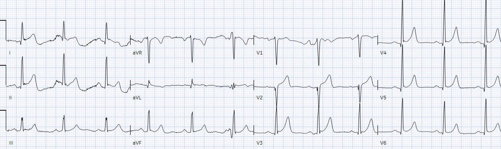
Sóng T ở V2 vẫn lớn kèm triệu chứng
vẫn tiếp diễn = động mạch vẫn còn tắc. Nhưng điện tâm đồ vẫn chưa đạt tiêu chuẩn
STEMI. Do đó nó được diễn giải là “không có STEMI” và bệnh nhân được
điều trị bằng liệu pháp kháng tiểu cầu kép và chuyển khoa tim mạch với chẩn đoán “NSTEMI.”
Bốn giờ sau khi đến viện, bác sĩ tim mạch khám
bệnh nhân, với troponin lặp lại đã tăng lên 1900 ng/L. Lúc này bệnh nhân đã
hết đau sau khi dùng thuốc kháng tiểu cầu và hai điện tâm đồ đầu tiên được diễn giải là “không
có thay đổi thiếu máu cục bộ”. Vì vậy bệnh nhân được nhập viện với chẩn đoán “NSTEMI”, kèm kế hoạch xét nghiệm lại
troponin mỗi 6 giờ và chụp mạch vành trong 24-48 giờ.
Có phải đã có tái tưới máu tự phát? Điều này
đòi hỏi phải hết đau ngực và có dấu hiệu tái tưới máu trên điện tâm đồ, nhưng bệnh nhân vẫn
có nguy cơ tắc lại. Thế nhưng không ghi lại điện tâm đồ nào sau khi triệu chứng
hết. Tám giờ sau khi đến viện, bệnh nhân than đau trở lại,
troponin lúc này là 5.200 ng/L, và được điều trị bằng miếng dán nitroglycerin. Điều này
đáng lo ngại cho tắc lại, nhưng không ghi lại điện tâm đồ và không thay đổi
kế hoạch chờ chụp mạch vành.
Điện tâm đồ tiếp theo được ghi 21 giờ sau
khi đến viện, sau khi troponin đạt đỉnh 7400 ng/L rồi giảm xuống 7000. Điện tâm đồ này
được ghi khi bệnh nhân không đau:

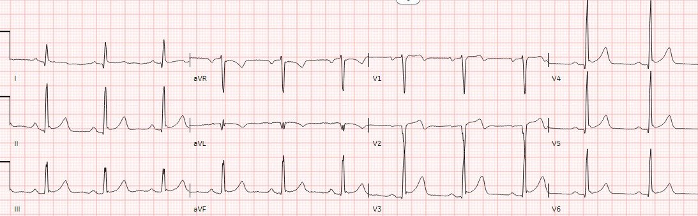
Lúc này ta thấy sóng T đảo ngược do tái tưới máu ở
aVL và V2, phù hợp với tái tưới máu tự phát ở một bệnh nhân đã
hết đau. Nhưng sóng T hai pha ở V2 không phải là “sóng T Wellens” vì
đứng trước chúng là sóng Q cấp và troponin cho thấy đã có ổ nhồi máu lớn. Điều này
một lần nữa xác nhận có tổn thương nghiêm trọng ở nhánh chéo thứ nhất, hoặc
đang thông thoáng tạm thời, hoặc vẫn còn tắc nhưng được tưới máu qua
tuần hoàn bàng hệ.
Nhưng không có thêm điện tâm đồ nào trong 8
giờ tiếp theo trước khi chụp mạch vành, và không xét nghiệm thêm troponin trong suốt thời gian còn lại
của đợt nằm viện.
Chụp mạch vành thấy động mạch nhánh chéo thứ nhất
tắc hoàn toàn, phù hợp với tất cả các điện tâm đồ, và được tái tưới máu sau khi đặt stent.

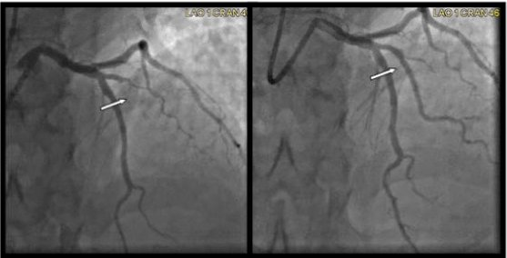
Smith: điện tâm đồ và troponin gợi ý đã tái tưới máu nhưng động mạch vẫn tắc hoàn toàn. Đây thường là kết quả của việc dòng chảy được phục hồi từ tuần hoàn bàng hệ. Hình ảnh tĩnh này của phim chụp mạch vành không đủ để nhận xét về dòng chảy bàng hệ.
Ngày hôm sau bệnh nhân được xuất viện với
chẩn đoán “NSTEMI” dù động mạch tắc hoàn toàn, và không rõ troponin
đỉnh. May mắn là các đợt tái tưới máu tự phát từng lúc trước khi chụp mạch vành
đã giúp ổ nhồi máu không lớn hơn nhiều, và cho phép sóng R
phục hồi trên điện tâm đồ lúc ra viện (một lời nhắc cuối cùng rằng sóng Q ban đầu là
cấp tính).

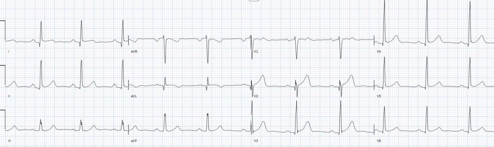
Tóm lại, tình trạng tắc mạch của bệnh nhân này đã
bị bỏ sót bởi
1.
kết quả
đọc bằng máy tính
2.
bác sĩ
cấp cứu đã ký duyệt điện tâm đồ
3.
bác sĩ
cấp cứu điều trị
4.
bác sĩ
tim mạch
5.
và tệ nhất
là chẩn đoán ra viện không thay đổi dù chụp mạch vành
cho thấy tắc 100%. Điều này không hiếm gặp mà là chuẩn mực chăm sóc theo
mô hình STEMI, trong đó chẩn đoán ra viện được thay đổi để nêu bật STEMI dương tính giả
nhưng không nêu bật STEMI âm tính giả
Tôi đã gửi điện tâm đồ nền và điện tâm đồ lúc nhập viện cho
Queen of Hearts, không kèm bất kỳ thông tin lâm sàng nào (ngoài
xác suất tiền nghiệm mà nó đã được huấn luyện), và không được
so sánh với các điện tâm đồ cũ:

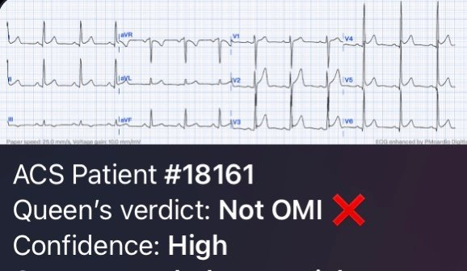

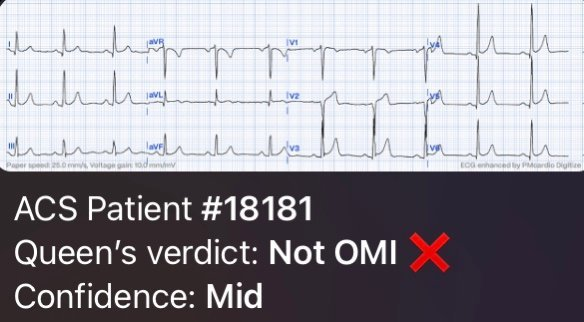
Vì vậy, khi đứng riêng lẻ và không có bối cảnh, điện tâm đồ này không chẩn đoán được OMI. Nhưng khi so sánh với điện tâm đồ trước đó (điều có thể được tích hợp vào các phiên bản tương lai của Queen of Hearts) và đặt vào bối cảnh lâm sàng thì nó có giá trị chẩn đoán.
Điều cần nhớ
1. Điện tâm đồ là một ảnh chụp nhanh tại một thời điểm, cần được so sánh với điện tâm đồ trước đó, và cần được ghi lại nếu triệu chứng vẫn tiếp diễn (để tìm tắc mạch) hoặc đã hết (để tìm tái tưới máu)
2.
Tiêu chuẩn
STEMI kém trong việc phân biệt giữa biến thể bình thường với tắc mạch vành
cấp hoặc tái tưới máu, và nồng độ troponin ban đầu không phân biệt được nhồi máu cơ tim do tắc với không do tắc
3.
sự hiện diện
của sóng J do tái cực sớm không loại trừ tắc mạch vành cấp
4.
Sóng Q có thể
là cấp tính và có thể biến mất khi tái tưới máu
5.
Sóng T
cần được xét trong bối cảnh: cùng một kích thước sóng T có thể tương xứng với một QRS bình thường, hoặc
không tương xứng so với QRS nhỏ hoặc sóng Q
6.
Tái tưới máu
tự phát vẫn là tình trạng nguy cơ cao, và động mạch vẫn có thể tắc hoàn toàn trên phim chụp mạch vành
7.
Chẩn đoán
NSTEMI bỏ sót OMI trong thời gian thực, và không được thay đổi
hồi cứu để nêu bật STEMI âm tính giả
8.
QOH có thể
giúp việc đọc điện tâm đồ OMI ở trình độ chuyên gia trở nên phổ biến rộng rãi
Đây là một ví dụ tuyệt vời khác về diễn tiến sóng Q bị bỏ sót:
Nhồi máu cơ tim cấp do tắc LAD, hay tái cực sớm?

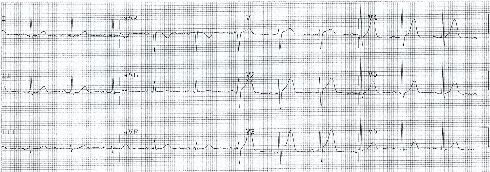
Đây rõ ràng là OMI nhưng đã không được nhận ra
Rồi 70 phút sau:

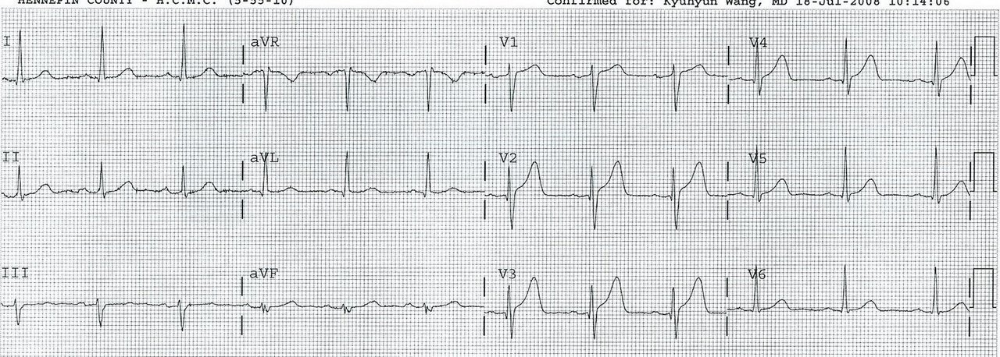
Sóng Q mới, vẫn không được nhận ra.
Những ca này thật dễ đối với Queen:

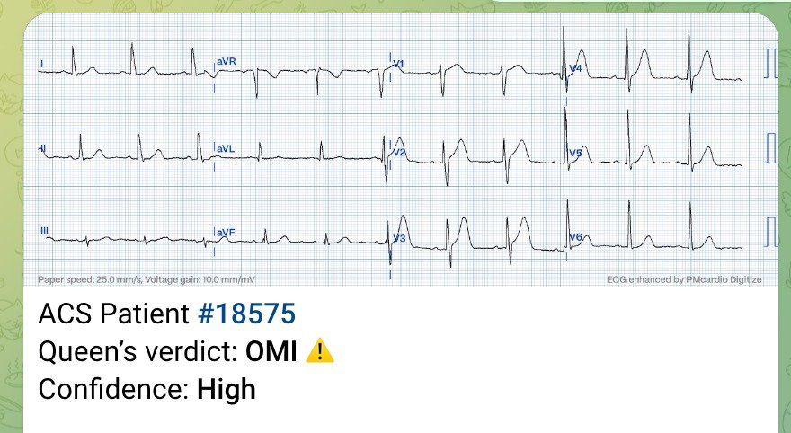
Ứng dụng Queen of Hearts PM Cardio hiện đã có mặt tại Liên minh châu Âu (được phê duyệt CE) trên App Store và Google Play.
Với độc giả ở Mỹ, các bạn cần chờ FDA. Nhưng trong lúc chờ đợi:
BẠN CÓ CƠ HỘI ĐƯỢC TRUY CẬP SỚM VÀO PM Cardio AI BOT!! (ỨNG DỤNG PM CARDIO OMI AI)
Nếu bạn muốn bot này giúp bạn chẩn đoán sớm OMI và cứu bệnh nhân cùng cơ tim của họ, bạn có thể đăng ký để nhận phiên bản beta sớm của bot tại đây. Bot chưa ra mắt, nhưng đây là cách để bạn có tên trong danh sách.
https://share-eu1.hsforms.com/18cAH0ZK0RoiVG3RjC5dYdwfyfsg (biểu mẫu đăng ký nhận bản beta sớm của bot)
TÀI LIỆU THAM KHẢO
1.
McLaren và
cs., trong đó có Meyers/Smith. Missing occlusions: quality gaps for ED patients
with occlusion MI. Tạp chí Am J Emerg Med, 2023
2.
Herman,
Meyers, Smith và cs. International evaluation of an artificial
intelligence-powered electrocardiogram model detecting acute coronary occlusion
myocardial infarction. Tạp chí Eur Heart J Dig Health, 2023

===================================
BÌNH LUẬN CỦA TÔI, bởi KEN GRAUER, MD (30/12/2023):
===================================
Một ca được ghi chép xuất sắc của Dr. McLaren — trong đó những chi tiết đáng tiếc về các cơ hội bị bỏ lỡ được thuật lại theo trình tự.
- Với những câu trả lời mà thông tim mang lại — tôi thấy việc xem lại 3 bản ghi đầu tiên trong ca hôm nay đặc biệt bổ ích. Để rõ ràng và dễ so sánh trong Hình 1 — tôi đã đặt 3 bản ghi ban đầu này cạnh nhau.

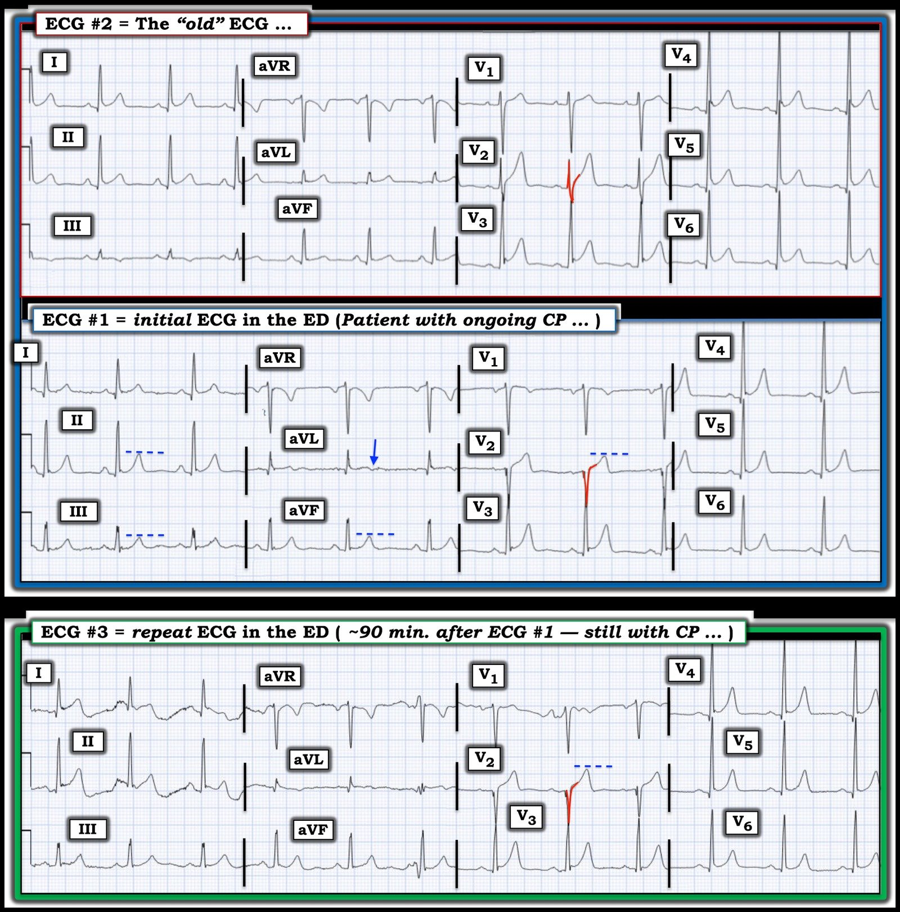
SUY NGHĨ CỦA TÔI về 3 điện tâm đồ đầu tiên trong ca hôm nay:
Dựa trên 2 điện tâm đồ đầu tiên trong ca hôm nay ( = bản ghi ban đầu tại khoa cấp cứu — và so sánh với một điện tâm đồ “cũ” của bệnh nhân này) — Dr. McLaren đã dự đoán đúng OMI cấp của Nhánh chéo thứ 1 của LAD. Tôi hoàn toàn thừa nhận rằng — tôi đã không dự đoán được mạch “thủ phạm” cho đến tận khá muộn trong diễn tiến của ca hôm nay.
- Trước đây chúng tôi đã đưa ra nhiều ca OMI cấp của Nhánh chéo thứ 1 hoặc thứ 2 của LAD. Những ca này dễ nhận ra nhất nhờ kiểu phân bố Cờ Nam Phi của độ lệch ST-T (tức là ST chênh lên ở các chuyển đạo I, aVL và V2 — kèm ST chênh xuống soi gương ở chuyển đạo III — và không có ST chênh lên ở các chuyển đạo ngực nào khác ngoài V2 — như đã trình bày chi tiết trong bài đăng ngày 11 tháng Năm năm 2022 của Dr. McLaren và tôi).
- Điểm MẤU CHỐT: Hình ảnh điển hình này của OMI D1 hoặc D2 bị che lấp trên bản ghi hôm nay do một điện tâm đồ “nền” ( = điện tâm đồ #2 trong Hình 1) cho thấy: i) Biên độ QRS tăng rõ rệt ở các chuyển đạo ngực bên (sóng R ở các chuyển đạo V4,V5,V6 đều vượt quá 20 mm); ii) Vùng chuyển tiếp sớm (vùng chuyển tiếp đã có ngay ở chuyển đạo V2 trên điện tâm đồ #2, với chiều cao sóng R vượt quá độ sâu sóng S); — và, iii) Một biến thể tái cực nền, với điểm J chênh lên 1-2 mm ở nhiều chuyển đạo. Với những dấu hiệu này trên điện tâm đồ “cũ” — dường như khó có thể nhanh chóng tiến triển thành một bản ghi cấp tính với sóng R kém và ST chênh lên khu trú ở chuyển đạo V2 như người ta vẫn chờ đợi ở OMI D1 hoặc D2 cấp.
- Bản ghi “nền” trong ca hôm nay đã cho thấy điều mà tôi nghĩ là một sóng T lớn không tương xứng ở chuyển đạo V2 (sóng T này cao hơn sóng R ở chuyển đạo V2 của điện tâm đồ #2 — và cao hơn nhiều so với độ sâu của sóng S ở chuyển đạo này). Dù vậy — trong bối cảnh ST chênh lên ở điểm J do tái cực và biên độ sóng R tăng rõ rệt bắt đầu từ chuyển đạo kế cận V3 — tôi không nghĩ có điều gì trên điện tâm đồ “cũ” trông có vẻ cấp tính. Nhưng tôi cũng không cho rằng sóng T ở chuyển đạo V2 của điện tâm đồ #1 nhất thiết là bất thường khi xét đến hình dạng sóng T ở chuyển đạo V2 của điện tâm đồ #2.
- Tôi nhận thấy phức bộ QS phân mảnh ở chuyển đạo V2 của điện tâm đồ #1 rõ ràng là một dấu hiệu có thể đáng lo ngại. Dù vậy, vì dấu hiệu này chỉ khu trú ở chuyển đạo V2 — tôi chưa tin rằng QS này là thật (chứ không phải do vị trí đặt điện cực) — cho đến khi tôi thấy phức bộ QS phân mảnh trông giống hệt ở chuyển đạo V2 của điện tâm đồ #3.
Các dấu hiệu cấp tính mà tôi tập trung vào trên điện tâm đồ #1:
Điều thuyết phục tôi về một biến cố tim cấp đang diễn ra là việc so sánh các chuyển đạo chi giữa điện tâm đồ ban đầu trong ca hôm nay và điện tâm đồ “cũ”:
- Với tôi — chuyển đạo MẤU CHỐT trên điện tâm đồ #1 là chuyển đạo aVL. Mặc dù trục mặt phẳng trán không thay đổi đáng kể giữa điện tâm đồ #1 và #2 — không thể phủ nhận biên độ sóng T giảm kèm sóng T bắt đầu đảo ngược trên điện tâm đồ #1 so với điện tâm đồ “cũ” (mũi tên XANH LAM ở chuyển đạo aVL của điện tâm đồ #1).
- Với thay đổi mới chắc chắn này ở chuyển đạo aVL — không thể phủ nhận biên độ sóng T tăng ở từng chuyển đạo thành dưới trên điện tâm đồ #1 so với hình dạng sóng T trên điện tâm đồ “cũ”.
- NHẬN ĐỊNH CỦA TÔI: Mặc dù tôi chưa chắc chắn về động mạch “thủ phạm” — ở bệnh nhân này với đau ngực mới và dai dẳng — chỉ định thông tim ngay là rõ ràng.
Điện tâm đồ thứ 3:
Nhiễu do cử động khiến việc diễn giải điện tâm đồ #3 ở các chuyển đạo chi trở nên khó khăn.
- Các dấu hiệu MẤU CHỐT đối với tôi trên điện tâm đồ #3 gồm: i) Phức bộ QS phân mảnh giống hệt ở chuyển đạo V2 (điều mà tôi nghĩ đã xác nhận rằng việc mất sóng R từ chuyển đạo V1 so với điện tâm đồ “cũ” là một dấu hiệu thật và quan trọng); — và, ii) Điều mà tôi cảm thấy là sự gia tăng thật và đáng kể về biên độ sóng T ở chuyển đạo V2 của điện tâm đồ #3 so với biên độ sóng T ở điện tâm đồ #2 — phù hợp (theo Dr. McLaren) với tắc 100% D1, như đã phát hiện khi thông tim.